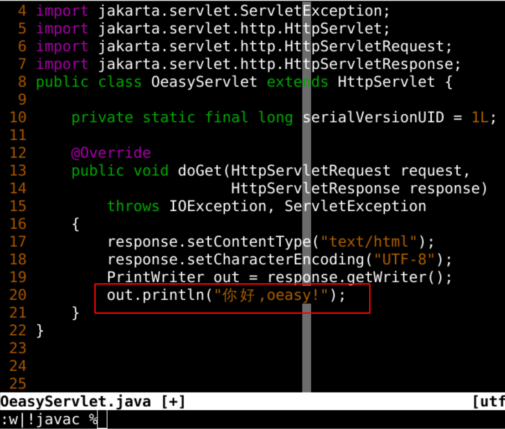
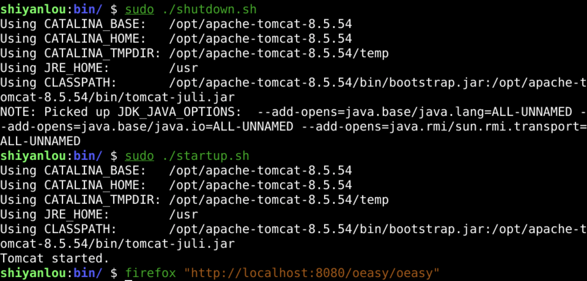
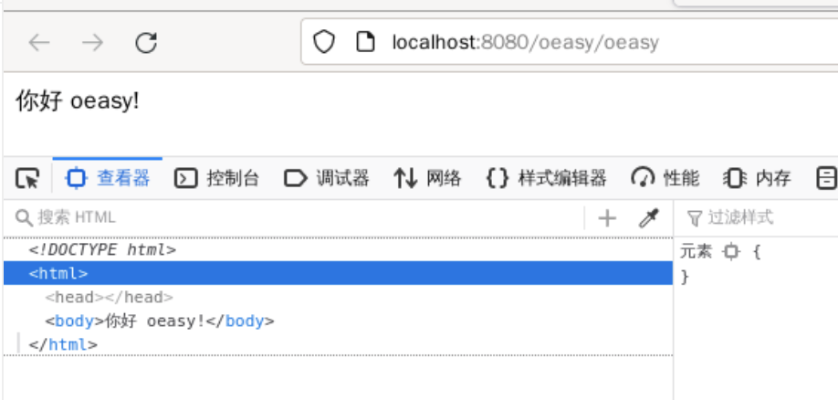
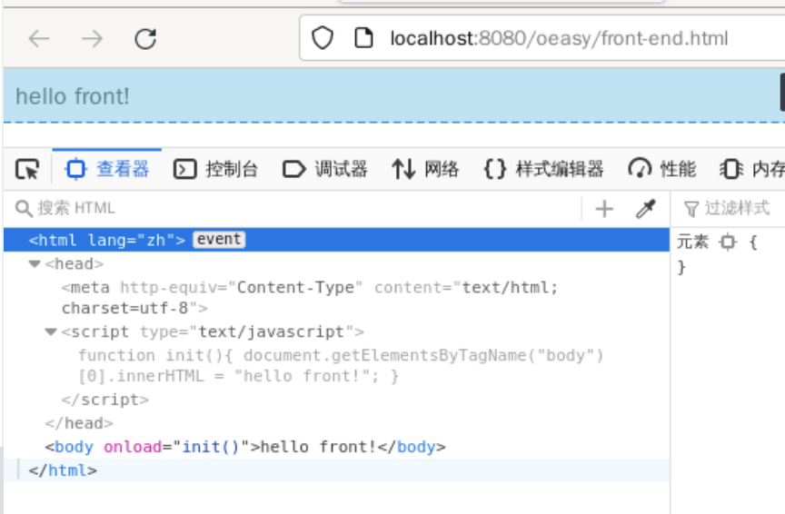
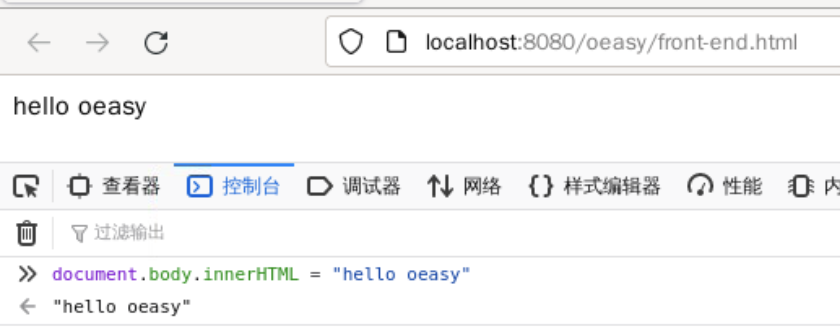
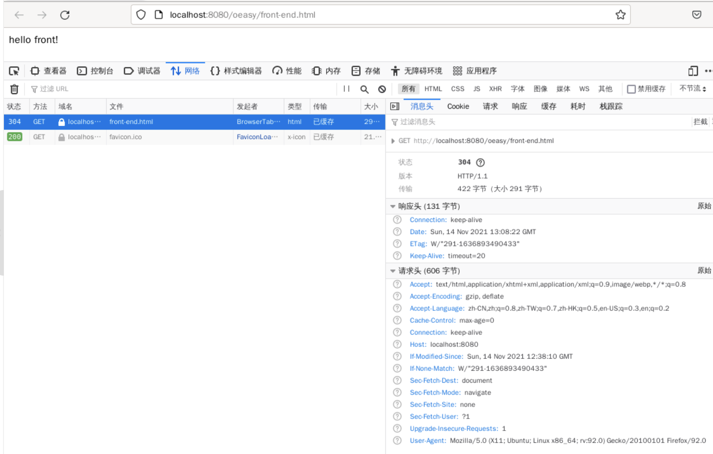
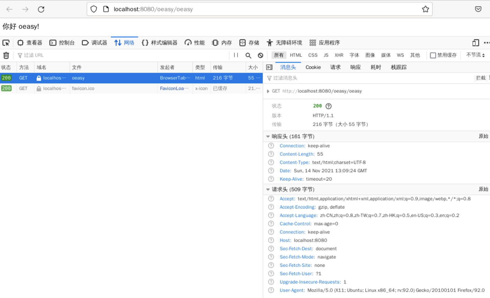
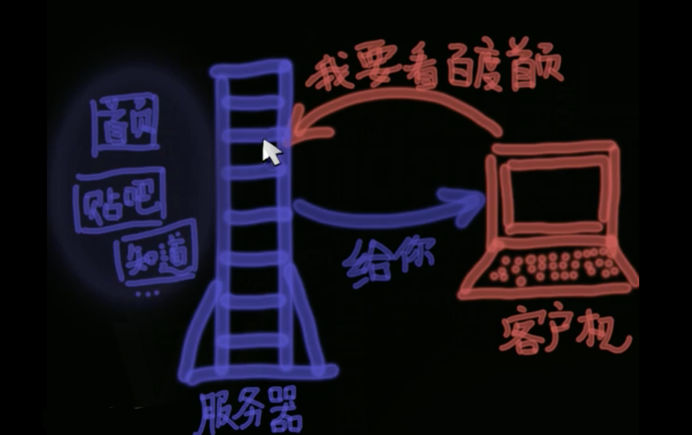
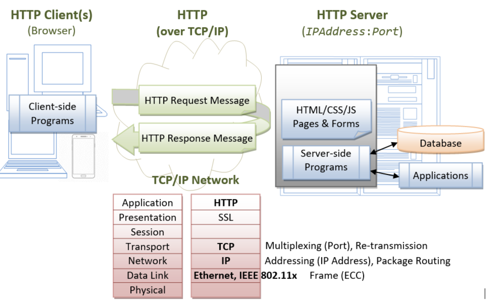

前端和后端
我们来回顾一下 😌
- 我们上次搭建了debug的开发环境
- 可以在程序里面向日志中输出debug相关信息
- 这些logs都在后端(后台)
- servlet源程序也在后端(后台)
- web.xml是后端程序路由的核心
- 可是
- 究竟什么是后端呢？🤔
- 这怎么理解呢？
客户与堂倌
- 客户(client)来到饭馆
- 堂倌(server)进行服务
- 堂倌负责招呼客人
- 哪些是散座
- 四人一起的不能安排在八人的大桌
- 谁有什么朋友
- 爱坐什么位置
- 还有处理各种异常情况
- 比如收保护费的
- 所以说
- 一堂、二柜、三灶、四案
- 堂倌是多么重要
服务器浏览器
- 今天的server服务器也和堂倌一样
- 明确客人的需求(request)
- 提供客人的菜品(response)
- 这个Clinet/Server的结构是从什么时候开始有的呢？
早期Server
- 早期计算资源非常宝贵
- 只有主机具有算力
- 其他的人使用的都是tty(电传打字机)
- 那个时候的结构就是Client/Host
- Host主机也就是Server服务器
后端
- 修改OeasyServlet.java

- 然后保存并编译
- w|!javac %
重启服务器

- 重启tomcat
浏览器观察

- 所有后端的运算过程我们都看不见
- 只能看到最终输出的结果
- 这就是把计算量放到了后端
- 和后端相对的是前端
- 那什么又是前端呢？
前端
<html lang="zh">
<head>
<meta http-equiv="Content-Type" content="text/html; charset=utf-8"/>
<script type="text/javascript">
function init(){
document.body.innerHTML = "hello front!";
}
</script>
</head>
<body onload="init()">
</body>
</html>
- 我们可以在oeasy这个web-app的根下
- 写这样一个文件front-end.html
浏览

- 可以看到body里面本来没有内容
- 最终的输出结果来自于前端的js脚本
- 这一切都发生在浏览器端
- 是浏览器下载了前端脚本
- 并且在前端执行的

- 前端的控制流程完全可见
前后端的共性


- 不论前端还是后端
- 都是浏览器发请求requests
- 服务器接收并返回响应response
- 最终在浏览器里面查看渲染后的最终结果
- 那前后端的区别是什么呢？
前后端的区别
- 前端
- 浏览器(客户)
- 负责发送请求(requests)
- 负责接收响应(response)
- 主要靠javascript等前端代码执行前端动画
- 前端代码浏览器里面都能看到
- 后端
- 服务器(堂倌)
- 负责接收请求(requests)
- 负责发送响应(response)
- 主要靠java、python、php等服务器语言在服务器执行
- 后端代码在浏览器里面看不到

- 发送和接收都有相应的规则
- 用的规则就是协议
协议
- 我们用的是http协议
- 发请求
- 接响应

- http协议处于最高的应用层
- 下层的基础就是tcp/ip
- tcp/ip下面基于以太网协议和wifi协议
- 底层协议都被抽象了
- 我们只关心发送请求和接收响应就可以了
- 我们总结一下吧
总结 🤨
- 这次了解了
- 什么是后端
- 什么又是前端？🤔
- 前端
- 负责发送请求(requests)
- 负责接收响应(response)
- 后端
- 负责接收请求(requests)
- 负责发送响应(response)
- 可是为什么要分出前后端呢？🤔
- 下次再说！👋